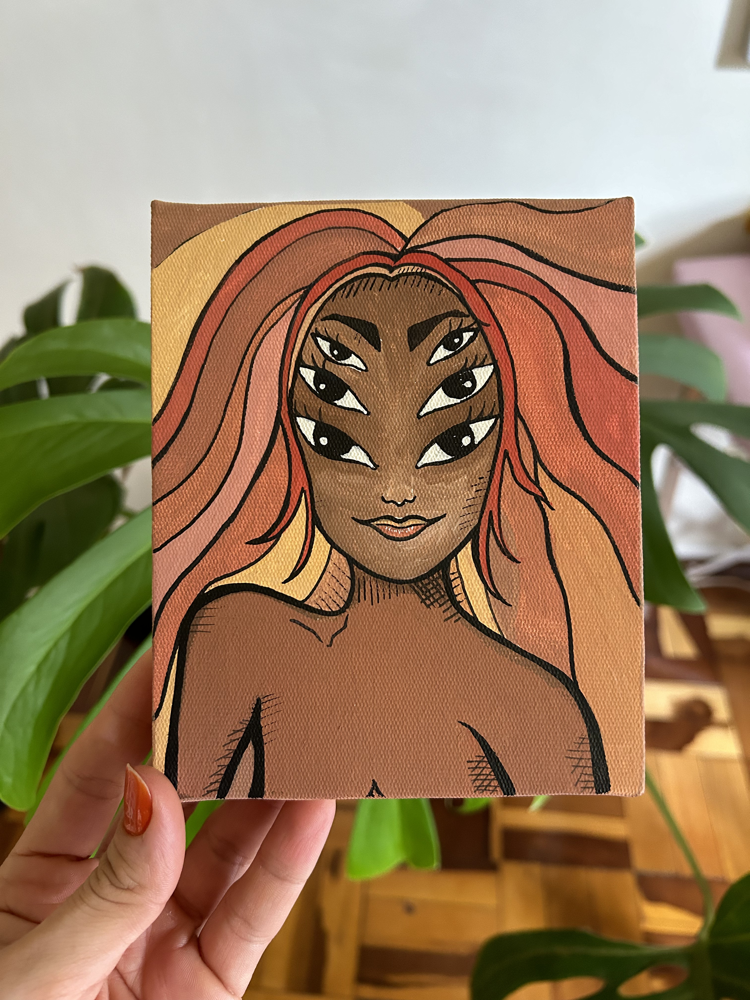
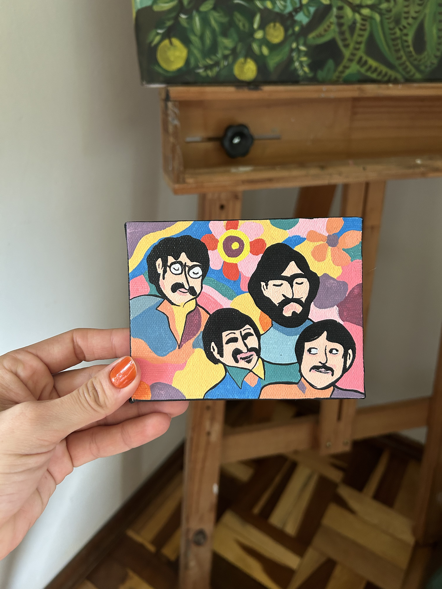
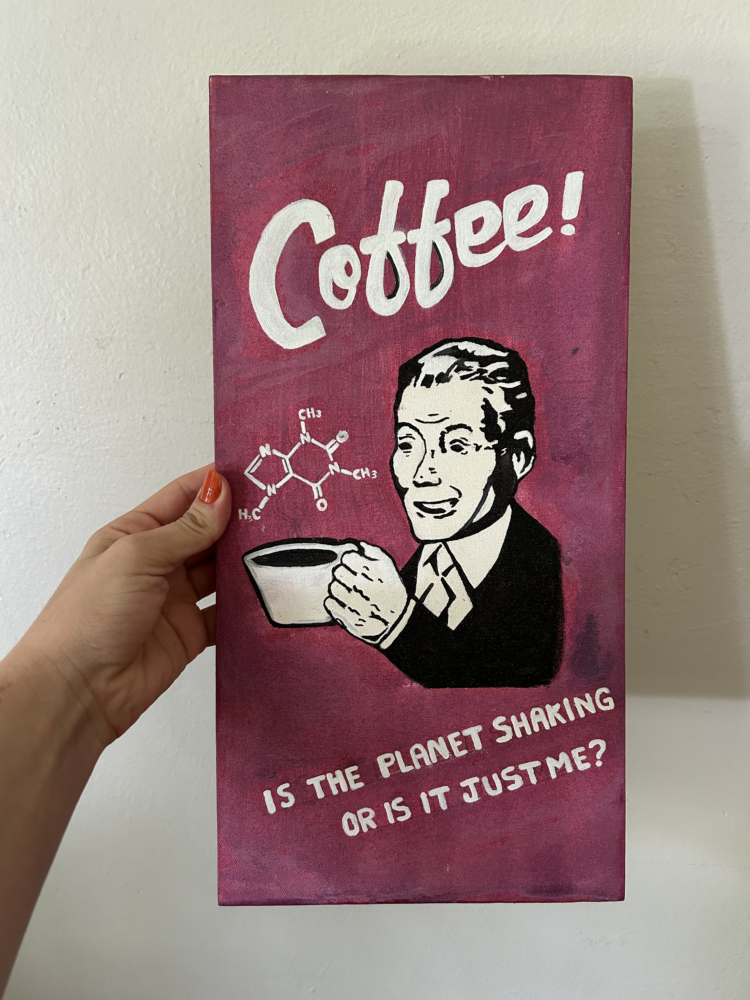
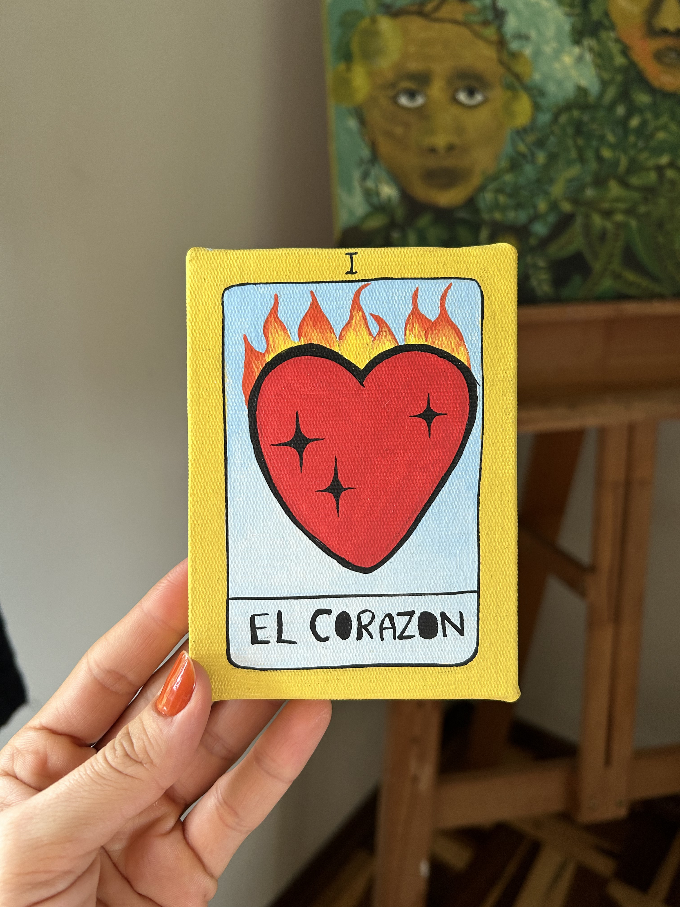
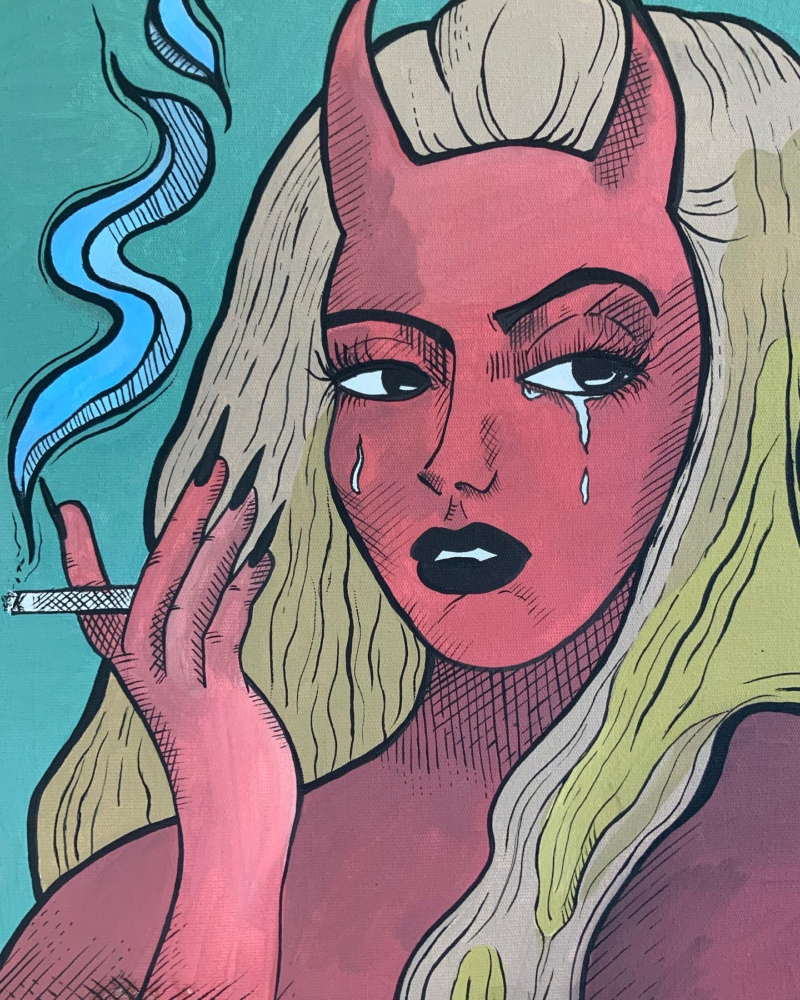
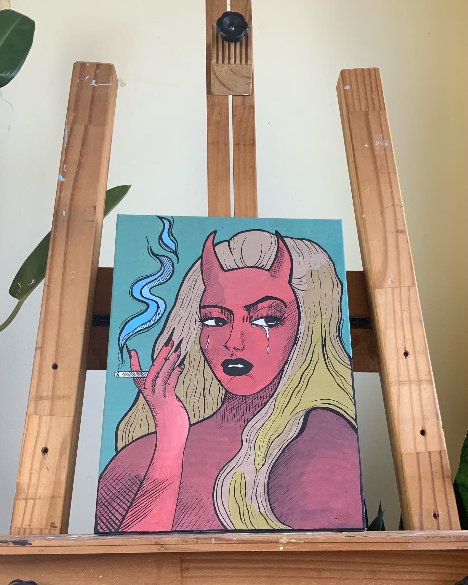
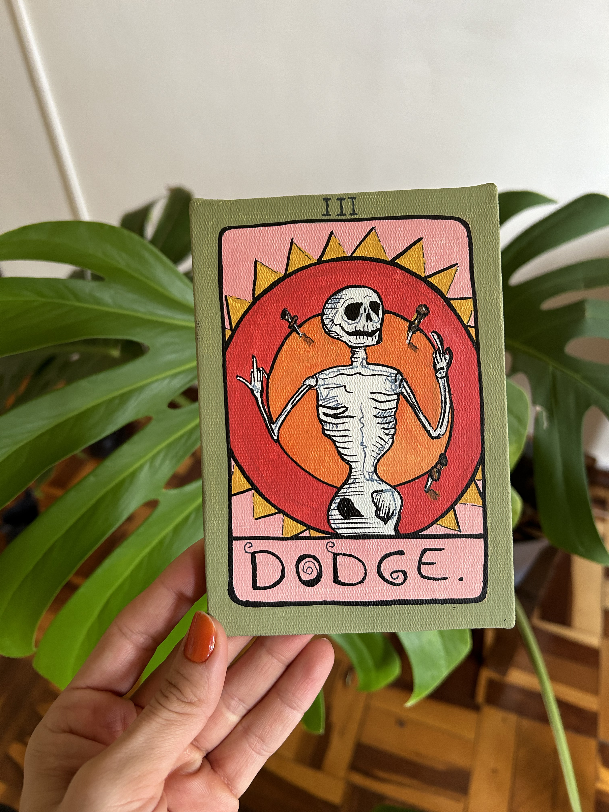
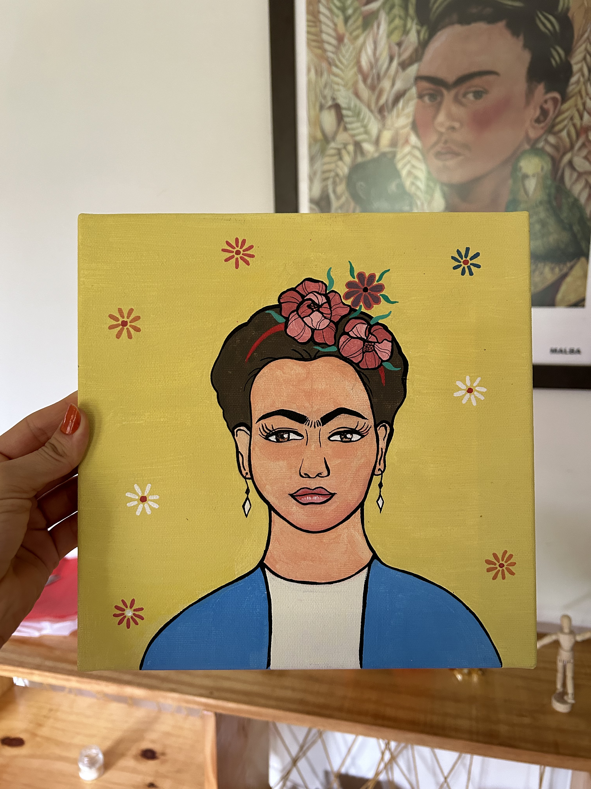
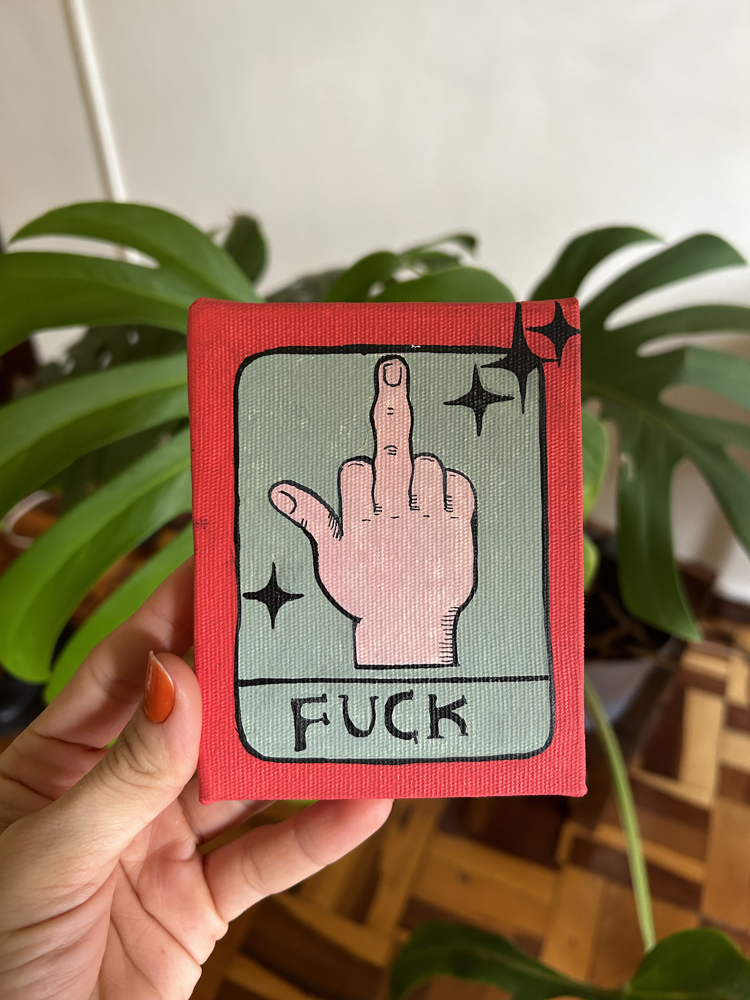
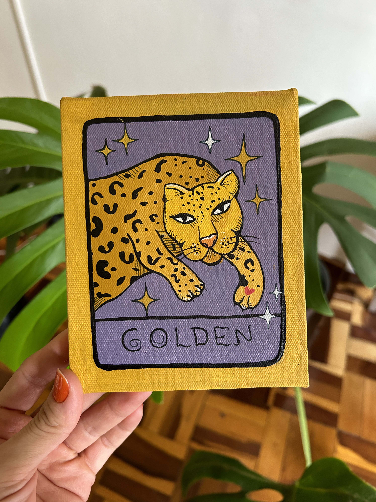

Arte: Desenho. Pintura. Teatro. Tatuagens.










Neste site falarei um pouco sobre minhas produções artísticas e também sobre
o que eu acho que cada uma delas desenvolvem nos seres humanos que a praticam.
Benefícios de praticar arte e artesanato:
- Desenvolvimento de foco e atenção;
- Desenvolvimento de habilidades manuais;
- Exercício de paciência e calma;
- Expressão de sentimenttos;